Обзор
Учебные файлы
Если вам нужны файлы для справки, загрузите и разархивируйте файлы учебников, как описано на странице эта страница.
Предварительные требования для этого урока
Прежде чем продолжить изучение этого руководства, убедитесь, что вы прочитали и поняли следующее.
Настройка сцены Maya
Цель этого раздела — создать полицилиндр и фиктивную полисетку треугольника, а также две иерархии соединений в Maya.
Полицилиндр действует как геометрия «конский хвост», связанный с шарнирной цепью. Другая иерархия суставов действует как упрощенный скелет персонажа, к которому будет прикреплена первая цепочка суставов с полисеткой «конский хвост». В конце концов, мы имеем вторичный шарнирная цепочка «конский хвост» расширение тот первичный скелет персонажа.
Местоположение файла сцены Maya:
Настройте сцену Maya и сохраните ее в соответствующем каталоге, например YOUR_PROJECT_FOLDER\Assets\Objects\current_tutorial. Убедитесь, что папка, содержащая сцену Maya и экспортированные файлы для CRYENGINE, является подпапка папки вашего проекта. В нашем случае мы сохранили файлы сцены Maya в этом каталоге:
YOUR_PROJECT_FOLDER\Активы\Объекты\jigglebone_tutorial_maya
Создайте иерархии соединений и сгладьте к ним два геометрических объекта:
В этом уроке мы создадим полицилиндр, соединенный с соединительной цепью. Эту совместную цепь можно использовать для два совершенно разных варианта использования:
- свободно свисающая, гибкая шарнирная цепь:
- конский хвост long, выходящий из затылка,
- резиновый шланг или что-нибудь похожее на веревку,
- железная цепь с несколькими звеньями,
и т. д.
-> суставы, которые сгибаются/вращаются во время моделирования - мультяшная, растягивающаяся суставная цепь:
- антенна, торчащая из головы робота или насекомого,
- завязанные волосы цвета short,
- букет цветов,
и т. д.
-> суставы, которые растягиваются/перемещаются во время моделирования
I. Создание иерархии соединений хвоста и полицилиндра:
- Начнем с создания вторичного скелета — суставов «конского хвоста». Используйте инструмент «Joint Tool» Maya, чтобы создать прямую суставную цепь, направленную вниз (мировой отрицательный Y). Мы решили использовать 8 суставов, последний сустав не будет учитываться при деформации, поэтому позже у вас будет 7 суставов, привязанных к узлу skinCluster. Переименуйте соединения для более четкой иерархии.
- Измените ориентацию соединения «Оси локального вращения» с помощью Maya. "Ориент Джойнт" инструмент.
(Файл: ponytail_skeleton_start.ma)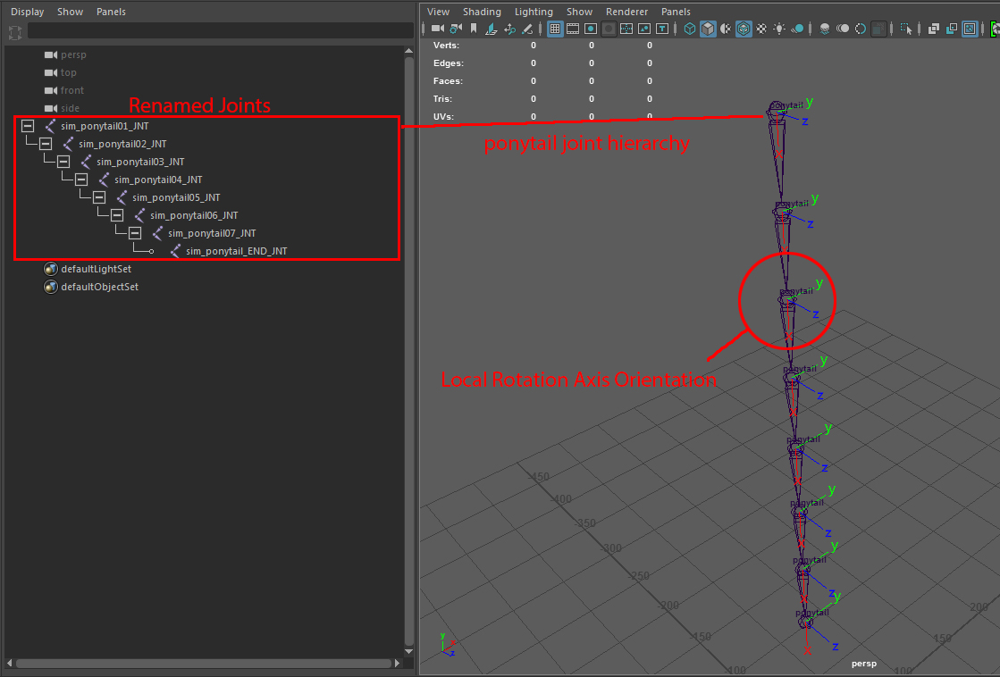
Рисунок 1: Чистая именованная иерархия соединений с правильной ориентацией всех локальных осей. - Убедитесь, что ваш атрибут «Joint Orient» обнулен, за исключением самого первого соединения. Он имеет значение -90 градусов по оси Z.
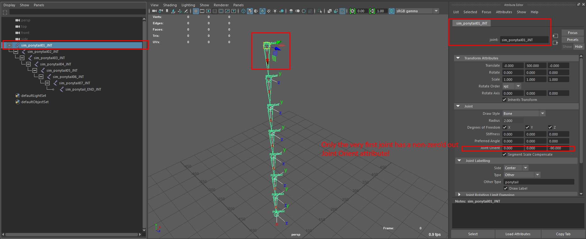
Рис. 2: Изображение, показывающее родительское соединение иерархии «конского хвоста» и его атрибут «Joint Orient». - Создайте полицилиндр с достаточным количеством подразделений для хорошей деформации. Это геометрия конского хвоста, которая будет плавно привязана к скелету конского хвоста и позже будет экспортирована как файл CRYENGINE *.SKIN.
(Файл: ponytail_skeleton_step01.ma)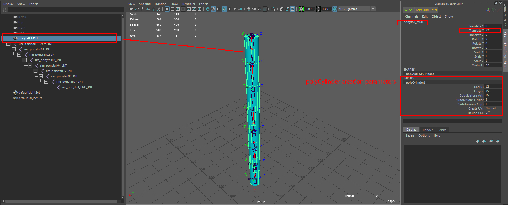
Рис.3: Показаны параметры создания геометрии хвоста манекена. Ничего, что могло бы продемонстрировать ваши потрясающие навыки моделирования ;-) !
II. Создание упрощенного целевого (первичного) скелета для привязки скелета «конский хвост» (вторичного) к:
- Для основной иерархии соединений создайте новую иерархию соединений с помощью «Joint Tool» Maya. Мы хотим сохранить этот основной скелет как можно более абстрактным.
В этом разделе будут созданы корень, таз и анимированный сустав головы. Кроме того, мы добавим «нулевое» соединение в качестве родительского соединения «конский хвост», дублируя родительское соединение «конский хвост» и повторно создав родительское соединение. Для ясности мы спрятали скелет и сетку конского хвоста.
(Файл: ponytail_skeleton_step02.ma) - Как упоминалось ранее в отношении иерархии суставов «конский хвост», вам следует переименовать суставы и проверить их правильное вращение по локальной оси. Отобразите локальную ось вращения суставов и используйте инструмент «Ориентировать сустав».
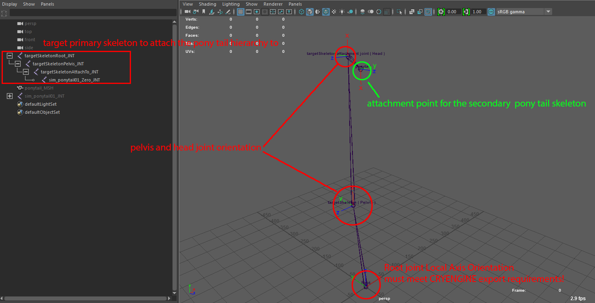
Рис. 4: Изображение, показывающее ориентацию основного корневого сустава скелета и места прикрепления конского хвоста. - Создайте объект треугольной сетки. Это фиктивный объект-треугольник для файла CRYENGINE *.CHR. Он содержит все данные иерархии базового скелета.
(Файл: ponytail_skeleton_step03.ma)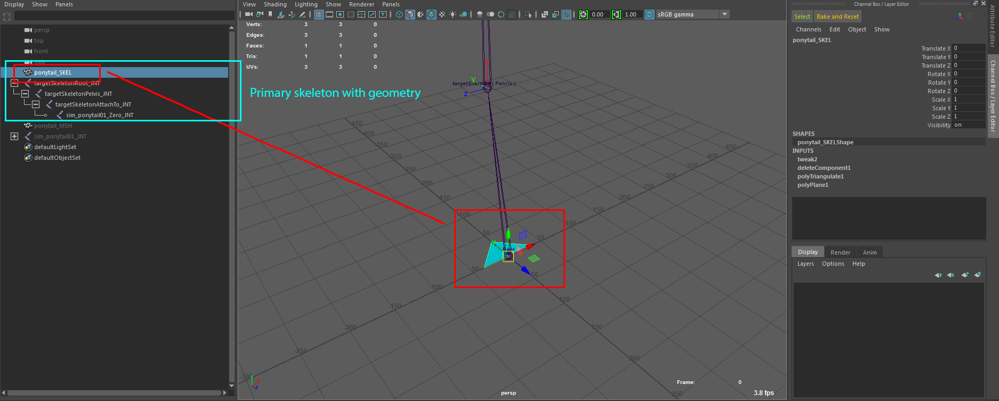
Рис5: Первичный скелет и его связанная геометрия, фиктивный треугольник.
III. Smooth Привяжите полигональную геометрию к ее скелетам:
С помощью инструмента «Привязка кожи» Maya плавно привяжите сетку полицилиндра к (вторичному) скелету «конского хвоста»: сначала выберите полицилиндр, а затем соединение номер «конский хвост». от 1 до нет. 7 и выберите инструмент «Bind Skin» Maya в меню «Skin» набора Rigging Menu (в Maya нажмите F-3).
(Файл: ponytail_skeleton_step04.ma)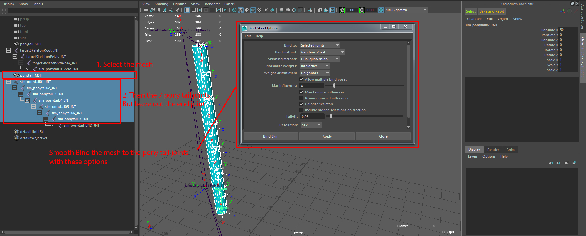
Фото 6: Плавное связывание геометрии хвоста.Прежде чем привязать манекен треугольника к основному скелету персонажа, мы сначала дублируем скелет. Выберите целевой корневой сустав скелета и нажмите CTRL-D дублировать.
Позже мы создадим иерархию «конский хвост» для этой дублированной структуры. Вы можете спросить, почему мы это делаем. Это связано с требованием в Maya к CRYENGINE экспортировать расширяемый файл *.SKIN в базовый скелет *.CHR. В Maya вы должны включить как минимум следующие суставы скелета вашего базового/основного персонажа, которых вы хотите расширить до вторичного расширяющегося скелета:Какие суставы включить в разгибательный/вторичный скелет?1. Корневой кожно-влиятельный сустав, который находится в вашем skinCluster, в основном это первый «деформирующийся» сустав скелета, например таз гуманоидного характера.
2. Целевой сустав вашего первичного/базового скелета, к которому вы хотите прикрепить расширяющийся/вторичный скелет.
3. Корневой сустав, который соответствует требованию CRYENGINE и является корневым узлом с нулевым значением: ось X указывает вправо, ось Y указывает вверх, если смотреть из окна просмотра сверху.
Или вы просто включаете полную иерархию базового/первичного скелета, которую хотите расширить.
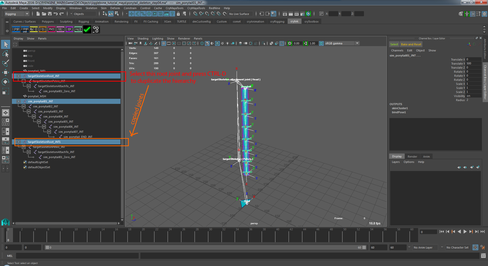
Рис.7: Дублируйте основной скелет для присоединения к нему скелета с конским хвостом.Привяжите скелет хвоста к последнему соединению дублированной иерархии.
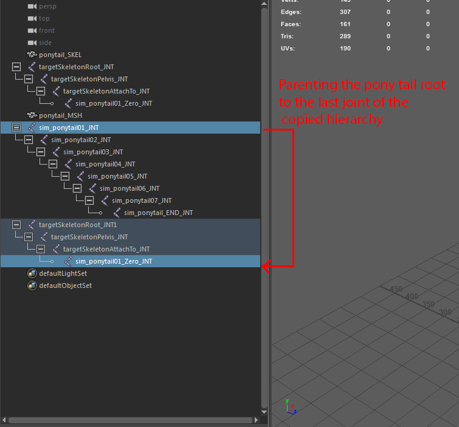
Рисунок 8: Включите основной/базовый скелет во (вторичный) скелет конского хвоста.Вот как должны выглядеть две объединенные иерархии для экспорта:
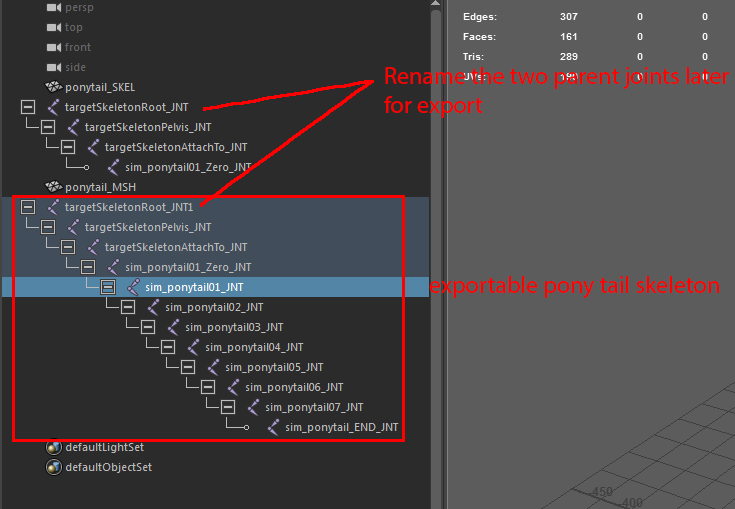
Рис.9: Помните, что у нас есть проблема с повторяющимися именами корневых суставов первичного и вторичного скелета. Мы должны менять их имена каждый раз при экспорте или помещать их в два файла сцены Maya и экспортировать оттуда:Прежде чем мы перейдем к шагам экспорта, нам еще нужно закончить базовый скелет *.chr. Первичный скелет необходимо привязать к первому деформирующему суставу иерархии: здесь это второй сустав в иерархии — тазовый сустав. Выделите треугольную сетку манекена и тазовый сустав и используйте инструмент «Привязать кожу» Maya.
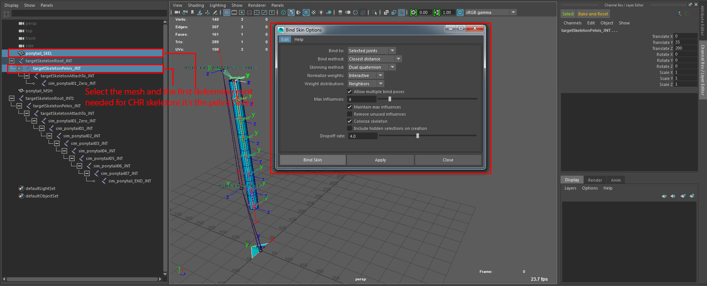
Рис. 10. Привяжите треугольный манекен к целевому основному/базовому скелету, скелету CHR:
IV. Добавьте немного анимации к основному скелету, который вы хотите расширить:
Мы хотим анимировать сустав «головы» базового скелета, чтобы позже, когда мы добавим процедурную/вторичную анимацию физики, она была получена из движения этого сустава (головы). Нажмите кнопку Играть нажмите кнопку в Maya, чтобы увидеть результаты
(Файл: ponytail_skeleton_step06.ma)
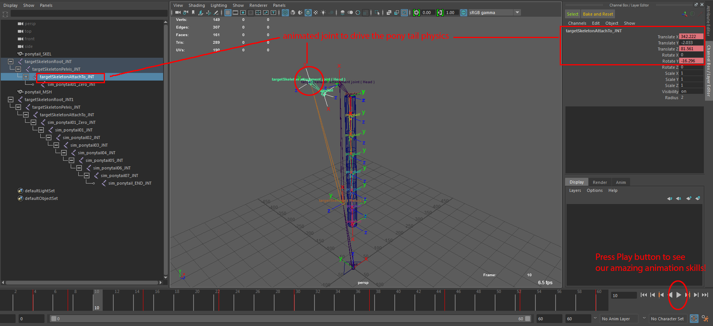
Рис11: Анимированный основной скелет, который позже будет управлять физикой конского хвоста в Character Tool от CRYENGINE.
Подготовьте сцену Maya для экспорта в CRYENGINE.
Цель этого раздела — показать вам, как создать необходимые узлы для экспорта файлов анимации CRYENGINE *.chr, *.skin и *.i_caf.
(Файл: ponytail_skeleton_final.ma)
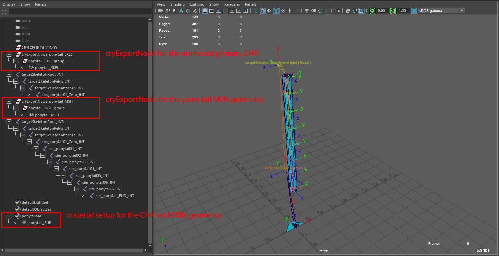
Рис12: Вот как выглядит окончательная иерархия
Создайте cryExportNodes для базового скелета CHR и удлиненный хвост SKIN:
В этом разделе нам нужно создать cryExportNodes, материалы и т. д. для экспорта из Maya в CRYENGINE, а также создать файлы *.chr и *.skin в конечном местоположении любого ресурса CRYENGINE.
- Для базового скелета CHR создайте cryExportNodes с помощью значка «Инструменты» на установленной полке Crytek.
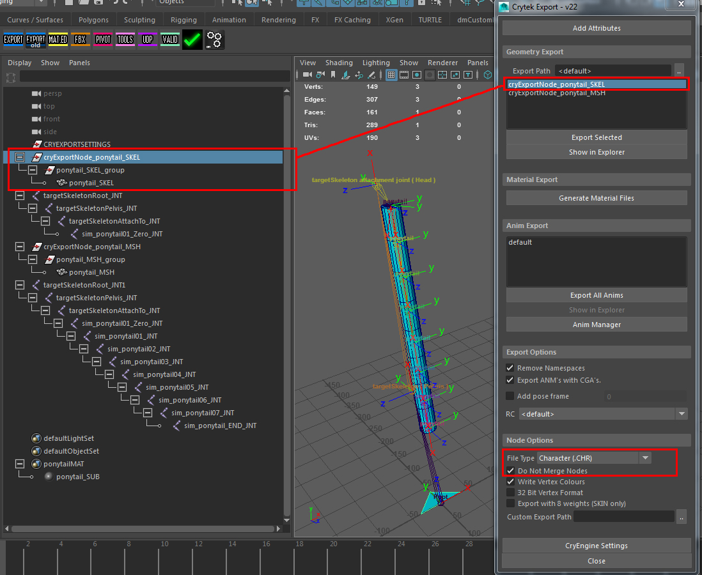
Рисунок 13: Настройте cryExportNode базового символа, в нашем случае называемого "ponytail_SKEL". - Что касается геометрии конского хвоста, полицилиндра, мы экспортируем его как вложение *.SKIN в CRYENGINE Character Tool. Добавьте cryExportNode, как показано на рисунке ниже:
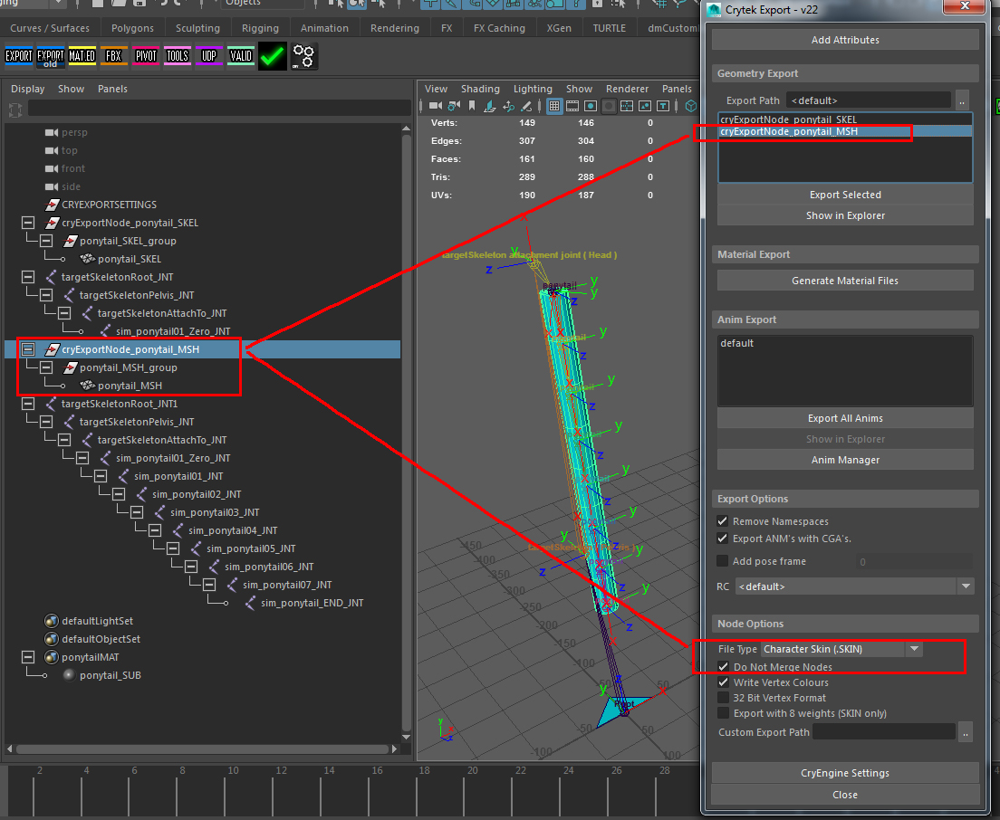
Рисунок 14: Настройте cryExportNode расширяющейся сетки «конский хвост», назовем его «ponytail_MSH»:
Настройка материала для CRYENGINE в Maya
Используйте стандартный рабочий процесс для создания группы материалов (набора Maya) с подчиненными ей шейдерами. Мы определим несколько случайных цветов для стандартного шейдера Blinn и добавим его в группу материалов CRYENGINE. Не забудьте экспортировать материал в файл *.mtl в папке вашего проекта.
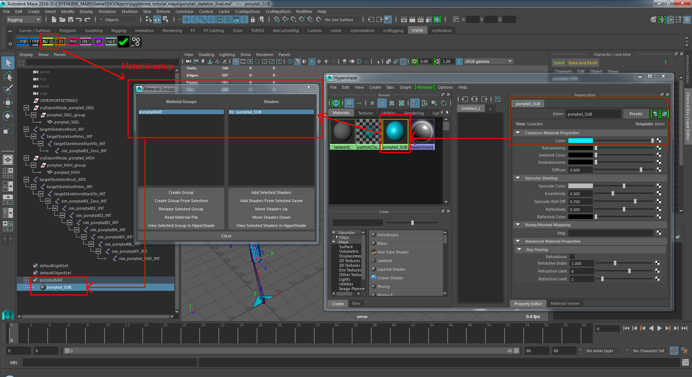
Рис. 15: Обзор стандартного материала Blinn, примененного к сцене, готовой к экспорту в CRYENGINE.
Разделите CHR и SKIN cryExportNode на два файла сцены Maya.
У нас по-прежнему существует проблема конфликта имен для корневого соединения первичного базового скелета (файл символа CHR) и вторичного расширяющегося скелета (файл «конский хвост» SKIN).
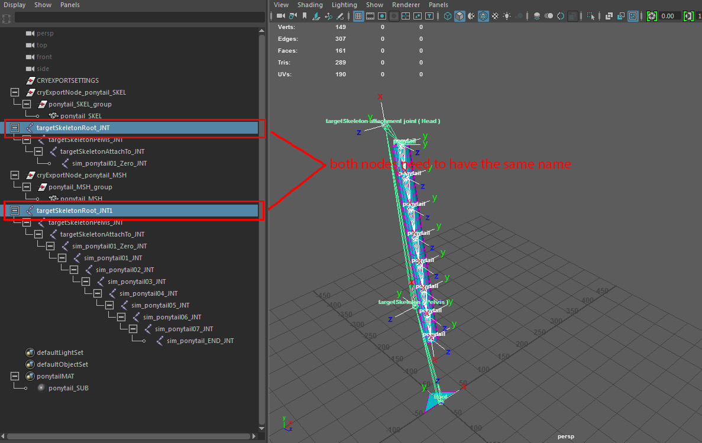
Рис16: Когда мы пытаемся дать обоим узлам одно и то же имя, Maya автоматически переименовывает один из них из-за конфликтующих имен.
Чтобы решить эту проблему, мы удалим дубликаты и сохраним каждый файл cryExportNode и его скелетную иерархию в новом файле, так что в итоге мы получим два файла, содержащие CHR и SKIN cryExportNode.
I. Сцена базового скелета CHR
Начните с загрузки "ponytail_skeleton_final.ma"файл. Там мы удаляем все узлы, связанные с хвостом SKIN, и сохраняем сцену в новый файл. Отсюда мы экспортируем файл CHR, а также анимацию «по умолчанию», показанную ниже. Используйте Полка Crytek -> Экспорт Кнопка для экспорта файла *.CHR.
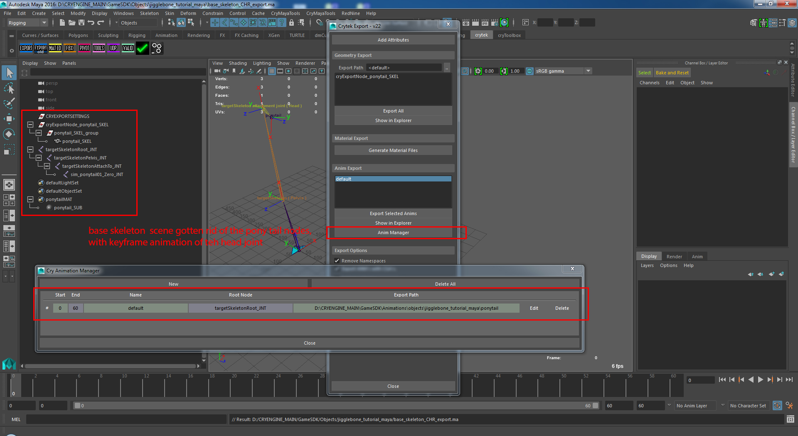
Рис. 17: cryExportNode иерархия анимированного первичного скелета CHR
II. Сцена с приложением SKIN
Загружаем "ponytail_skeleton_final.ma"файл еще раз. Затем мы удаляем все узлы, связанные с базовым скелетом, и сохраняем сцену в новый файл. Отсюда мы экспортируем файл *.SKIN. Использование Полка Crytek -> Экспорт чтобы экспортировать файл *.SKIN.
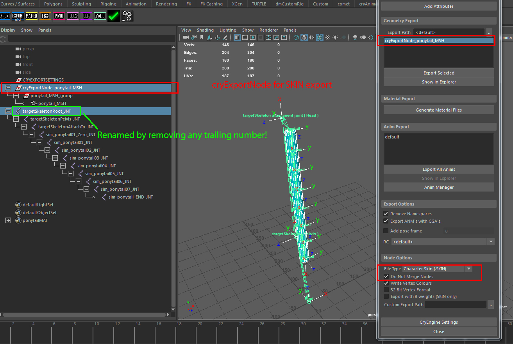
Рис. 18: Иерархия CryExportNode для вложения SKIN.
На этом раздел Maya завершается. В следующем разделе мы запустим Character Tool пользователя CRYENGINE, чтобы создать конский хвост.